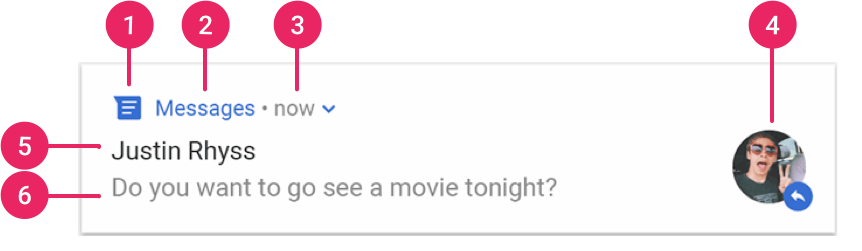

Starting with Android 8, all notifications must be assigned a Channel.
Users can turn on/off notifications by channel and assign channels different priorities.
var builder = NotificationCompat.Builder(this, CHANNEL_ID)
.setSmallIcon(R.drawable.notification_icon)
.setContentTitle(textTitle)
.setContentText(textContent)
.setPriority(NotificationCompat.PRIORITY_DEFAULT)
NotificationManager.notify(id, builder.build())
Users typically expect to tap a notification and open your app
val intent = Intent(this, AlertDetails::class.java).apply {
flags = Intent.FLAG_ACTIVITY_NEW_TASK or Intent.FLAG_ACTIVITY_CLEAR_TASK
}
val pendingIntent: PendingIntent = PendingIntent.getActivity(this, 0, intent, 0)
...
builder.setContentIntent(pendingIntent)
...
Explicit vs Implicit
val intent = Intent()
val intent2 = Intent(ctx, SomeComponent::class.java) // explicit
val intent3 = Intent(Intent.ACTION_DIAL) // implicit
val intent = Intent(Intent.ACTION_PICK)
try {
context.startActivity(intent)
} catch (e: Exception) {
// no activity found?
}
This example uses the GetContent result contract.
val getContent = registerForActivityResult(GetContent()) {
uri: Uri? ->
// Handle the returned Uri
}
...
getContent.launch("image/*")
class PickRingtone : ActivityResultContract<Int, Uri?>() {
override fun createIntent(
context: Context,
someInputData: Int) =
// create the intent
override fun parseResult(resultCode: Int, result: Intent?) : Uri? {
// retreive the result from the Intent
}
}
<uses-feature android:name="android.hardware.camera"
android:required="false" />
<uses-permission android:name="android.permission.WRITE_EXTERNAL_STORAGE" />
if(ContextCompat.checkSelfPermission(this,
android.Manifest.permission.WRITE_EXTERNAL_STORAGE) !=
PackageManager.PERMISSION_GRANTED) {
ActivityCompat.requestPermissions(this, arrayOf(
android.Manifest.permission.WRITE_EXTERNAL_STORAGE), MY_REQUEST_CODE)
return null
}
Google Accompanist library (https://google.github.io/accompanist/permissions/)
Provides support for runtime permissions in Jetpack Compose
In order to access a device’s location, you must have Play Services installed.
An emulator with Play services is required
implementation 'com.google.android.gms:play-services-location:18.0.0'
In order to access a user’s location, your must, at runtime, ask for permission
Manifest.permission.ACCESS_FINE_LOCATION
Three major components are needed in order to get location updates:
Fused meaning it’s a combination of Wifi and GPS
private lateinit var fusedLocationClient: FusedLocationProviderClient
override fun onCreate(savedInstanceState: Bundle?) {
// ...
fusedLocationClient = LocationServices.getFusedLocationProviderClient(this)
}
val locationRequest = LocationRequest.create()?.apply {
interval = 10000 // milliseconds
fastestInterval = 5000
priority = LocationRequest.PRIORITY_HIGH_ACCURACY
}
Get’s called when location changes occur
locationCallback = object : LocationCallback() {
override fun onLocationResult(locationResult: LocationResult?) {
// do something with the location
}
}
Finally, initiate the request…
fusedLocationClient.requestLocationUpdates(
locationRequest,
locationCallback,
Looper.getMainLooper()
)